画像を現像中


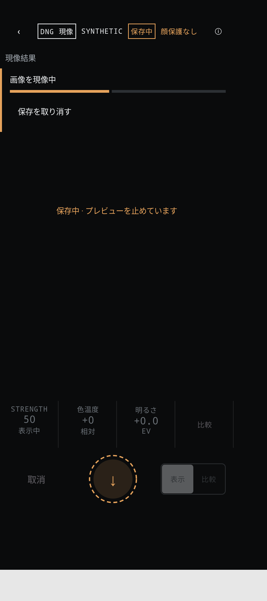
合成UI・実写真なし。左は変更前バナーの文言と操作を再現したfixture、右は製品の進捗表示。実保存時間や実機の描画を示す画像ではありません。
通常360×760dp、短画面360×480dp、文字拡大360×760dp・2倍。短画面は同じスクリーン内に高さを制限したfixtureです。画面下部の切れを含め、全体レイアウト承認とは別に確認します。
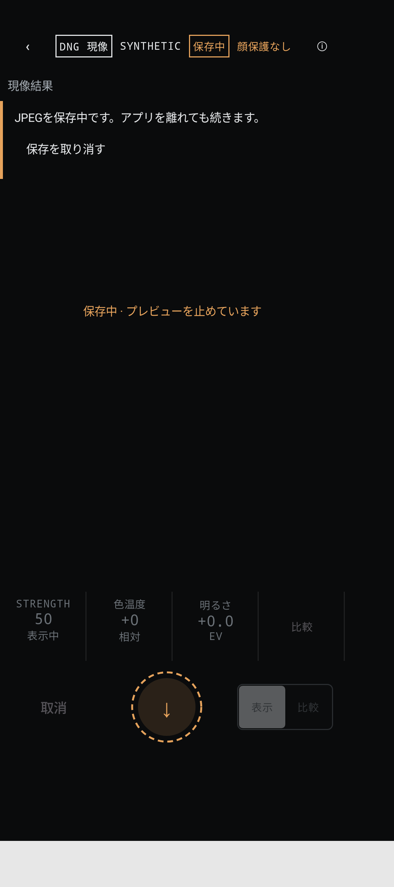
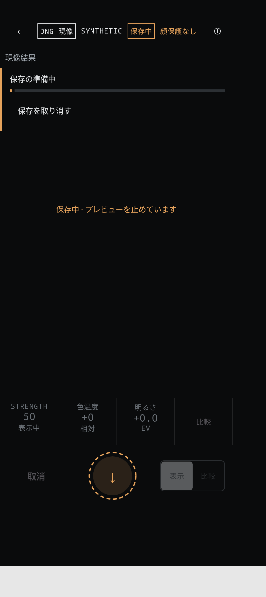


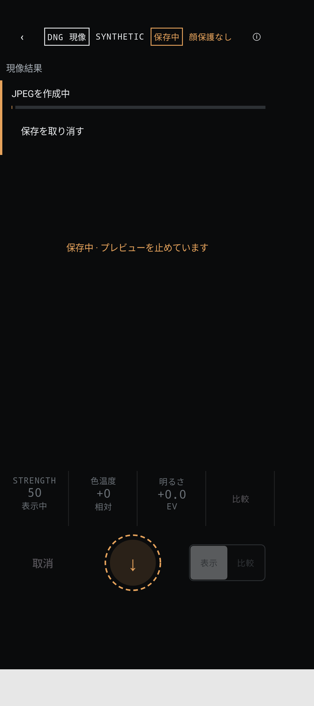

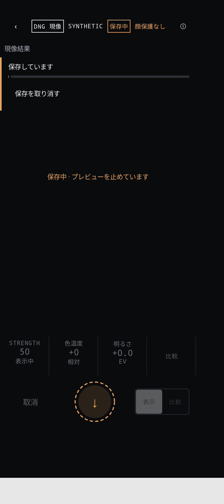
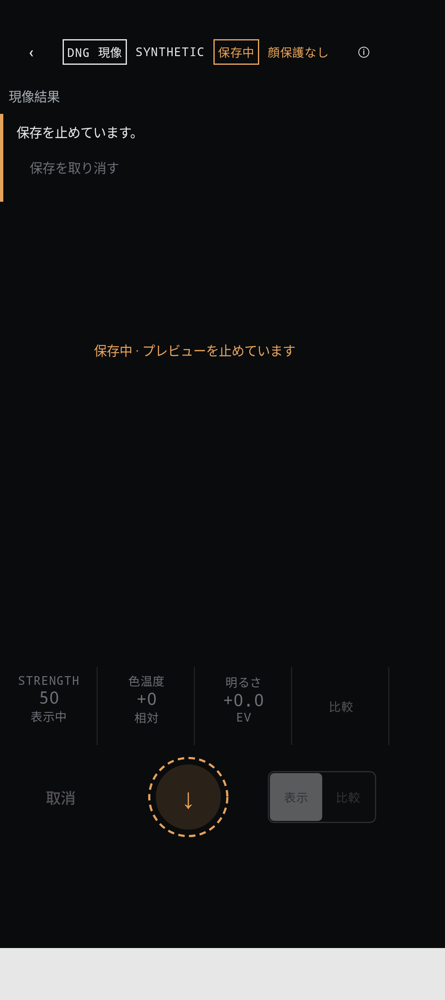

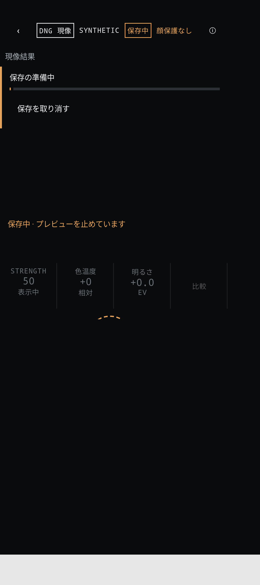

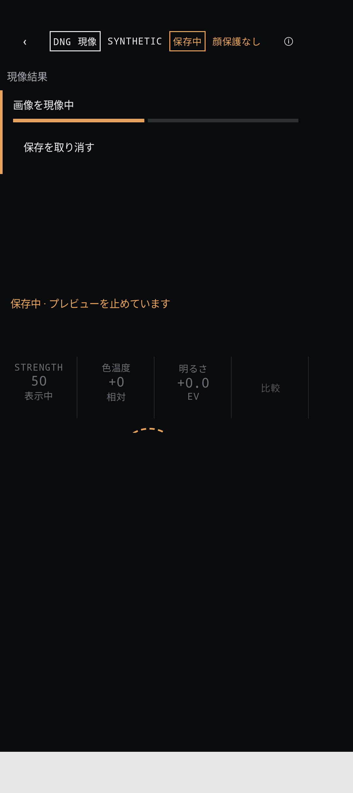

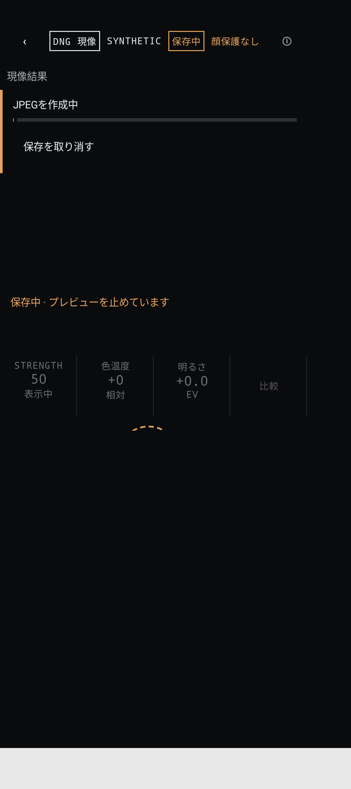
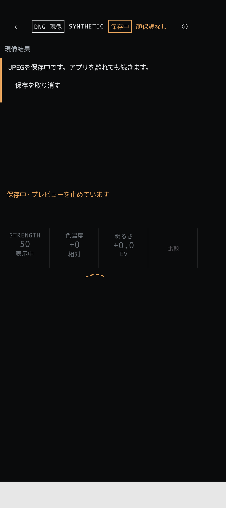
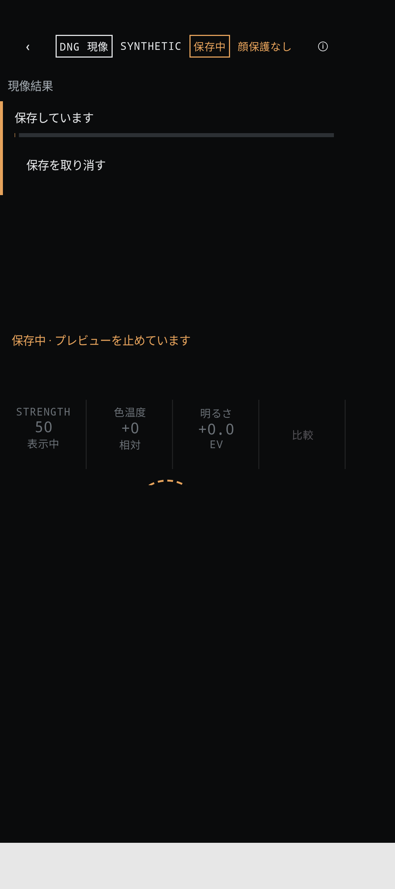
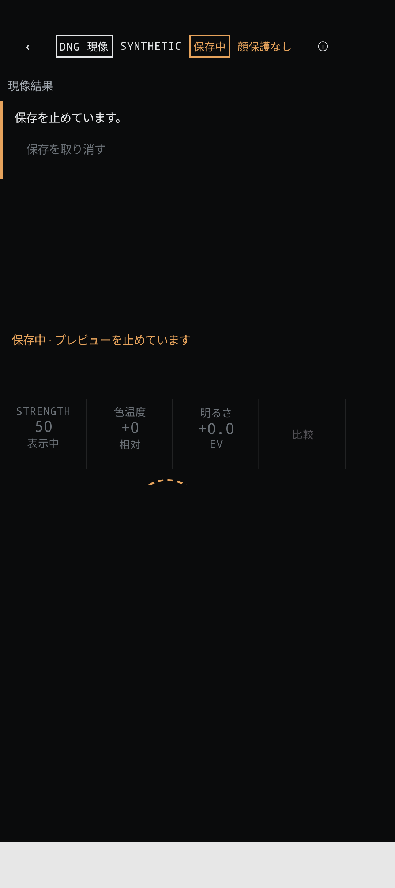
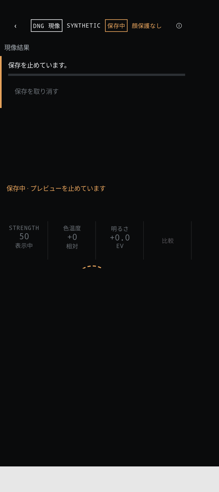

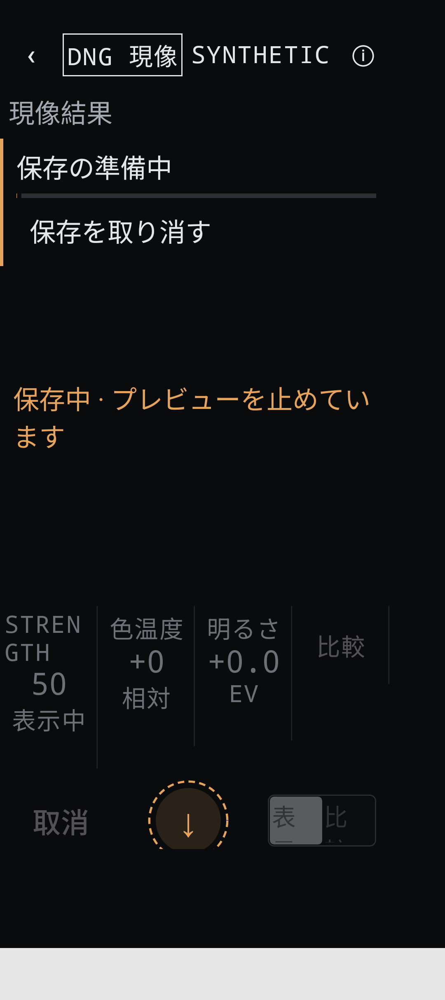
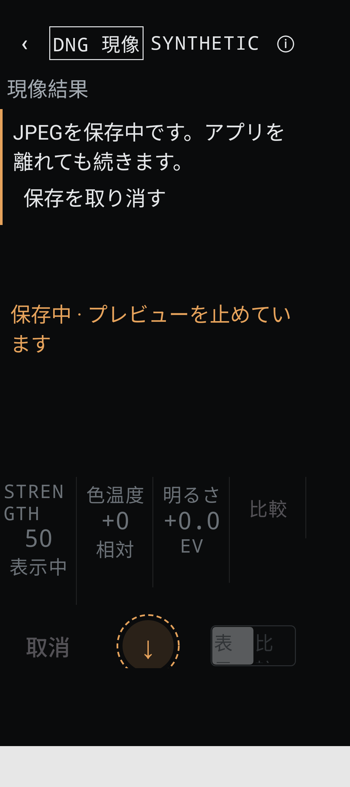
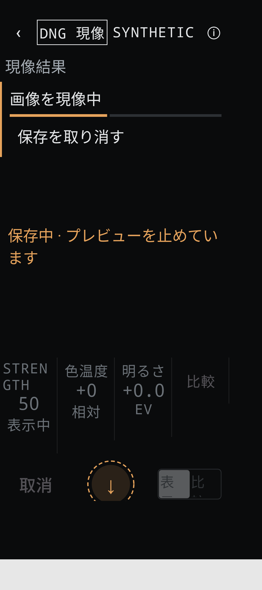

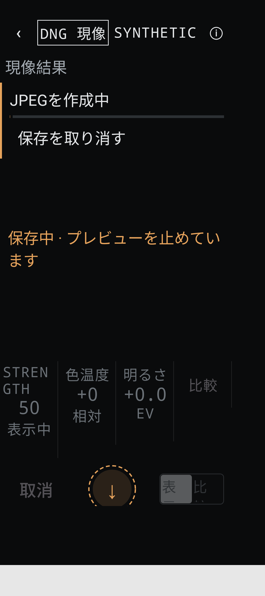

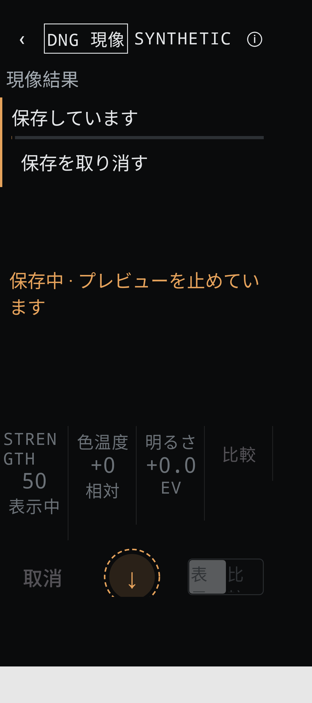
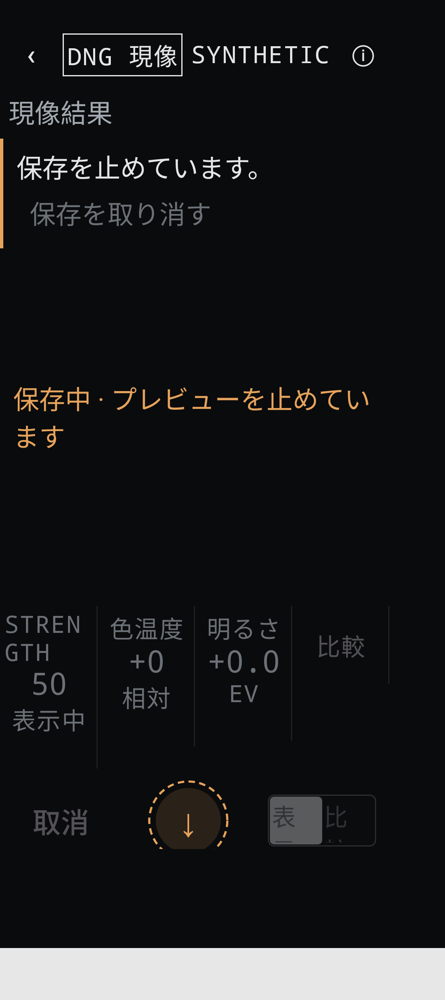
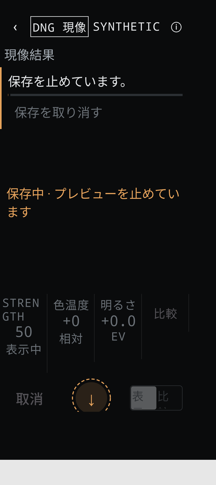